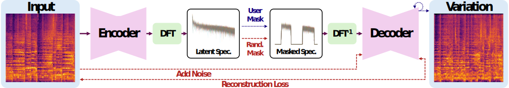

Latent Fourier Transform
Abstract
We introduce the Latent Fourier Transform (LatentFT), a framework that provides novel frequency-domain controls for generative audio models. LatentFT combines a diffusion autoencoder with a latent-space Fourier transform to separate musical patterns by timescale. By masking in the latent frequency domain during training, our method yields representations that can be manipulated coherently at inference. This allows us to generate musical variations and blends from reference examples while preserving characteristics at user-specified timescales. LatentFT parallels the role of the equalizer in audio production: while traditional equalizers operate on audible frequencies to shape timbre, LatentFT operates on latent frequencies to shape musical structure. Experiments and listening tests show that LatentFT improves condition adherence and quality compared to baselines. We also present a technique for hearing latent frequencies in isolation, and show different musical attributes reside in different regions of the latent spectrum. Our results show how frequency-domain control in latent space provides an intuitive, continuous frequency axis for conditioning and blending, advancing us toward more interpretable and interactive generative audio models.
Method
The Latent Fourier Transform. We encode audio into a series of latent vectors and take their Fourier transform, resulting in a latent spectrum. During training (red), this spectrum is masked randomly and used to reconstruct the input. During inference (blue), the user specifies a spectral mask, which selects features from the input at specific timescales and conditions a generative process.
Comparing the Audible and Latent Spectra
Progressive Low-Pass
In this example, we compare the audible spectrum (the Fourier-domain representation of the audio waveform) and latent spectrum (Fourier-domain representation of the latent sequence). We play a song. In the first video (left), we progressively low-pass the song's waveform, as done in traditional audio equalization. In the second video (right), we progressively low-pass the latent sequence representing the song. The audible spectrum ranges between 20 and 20,000 Hz (representing the limits of human hearing), while the latent spectrum has a lower range (0–43 Hz). The musical patterns that the latent spectrum captures occur on larger temporal scales than the oscillations in the audio waveform.
Progressively low-passing the latent spectrum has the effect of smoothing the musical patterns in the piece, first smoothing fine details like transients, then smoothing rapid arpeggios, then smoothing larger-scale features like the chord progression.
Examples
Just like a traditional audio equalizer, LatentFT requires intentionally (rather than randomly) selecting frequencies to boost. For instance, a song of 120 bpm might have interesting patterns at 2 Hz, 1 Hz, 4 Hz, and 8 Hz, but a song of a different tempo might require selecting different latent frequencies. Thus, we present demonstrative examples selected by the authors. We recommend listening with headphones or high-quality earbuds.
Conditional Generation
Instructive Example
We show several conditional generation examples. Our goal is to generate variations that are diverse and musically interesting, while resembling the input music at the selected temporal scale (latent frequency). First, we play the input music clip:
We then zoom in on a rhythmic pattern in the music between 9–9.5 Hz in the latent spectrum, to capture rapid drum patterns occurring within that range.
Finally, we generate several variations, preserving the selected rhythmic pattern:
The variations evoke the essence of the selected rhythmic pattern, while remaining diverse and musically interesting. For instance, in the second example, the pattern materializes in the synthesizer.
0–0.5 Hz Example
In this example, we select 0.5–1 Hz from some guitar arpeggios. Isolating 0–0.5 Hz retains the overall chord progression, which we can use to generate more variations.
1.5–2 Hz Example
In this example, we select 1.5–2 Hz from the reference, which contains an alternating kick and snare drum pattern. This rhythmic pattern is replicated in the variations.
Blending
Instructive Example
We show several qualitative examples for blending. Our goal is to capture characteristics from two inputs, and combine them together. We play the first input, and then the latent frequencies we isolate:
Now, we do the same for the second input:
Now, we blend the two together. Note how the rhythmic pattern from the second input modulates the generation.
Driving a Christmas Song Using Guitar Strumming
In this example, we combine the large-scale features of a Christmas song with the transient details (high frequencies) of a guitar recording. Higher latent frequencies will capture transients, onsets, and timbral details, while removing aspects like key and chord progression, as we can see in input 2's isolation. As a result, the guitar recording's transients/onsets are imparted onto the Christmas song's chord progression, creating a timbre-transfer effect where the guitar's strumming drives the Christmas song's chord progression.
Another Timbre-Transfer-Like Example
We show a third example below. Again, we select a larger band of high frequencies from input 2 to capture sharp onsets/transients. We impart these onsets onto input 1's global characteristics, resulting in a timbre-transfer effect, where input 2's onsets 'drive' input 1.